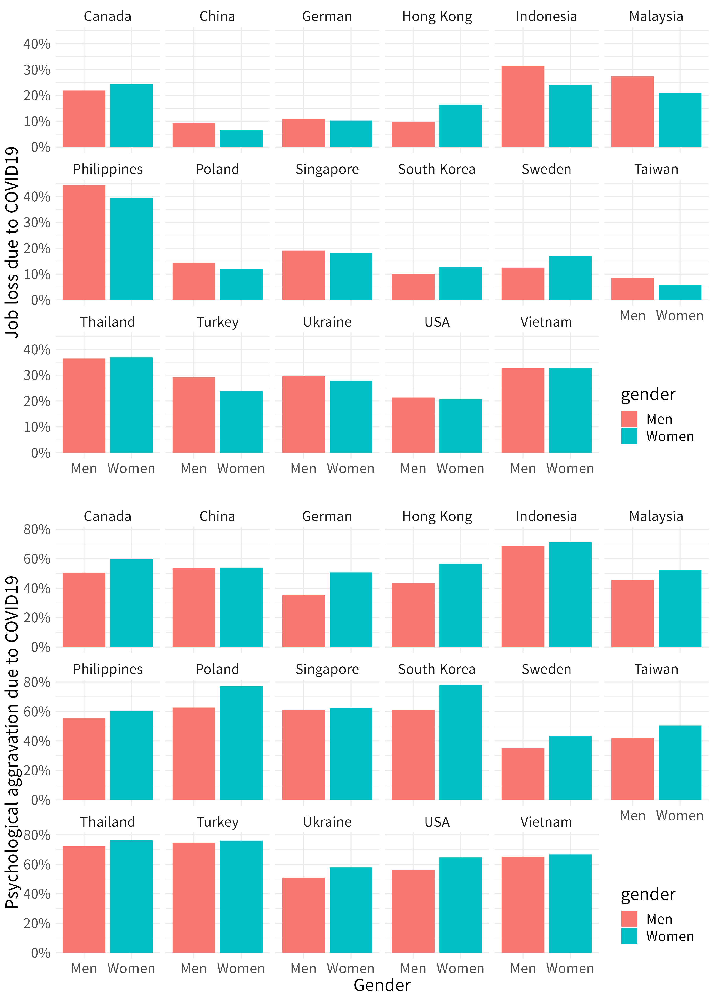
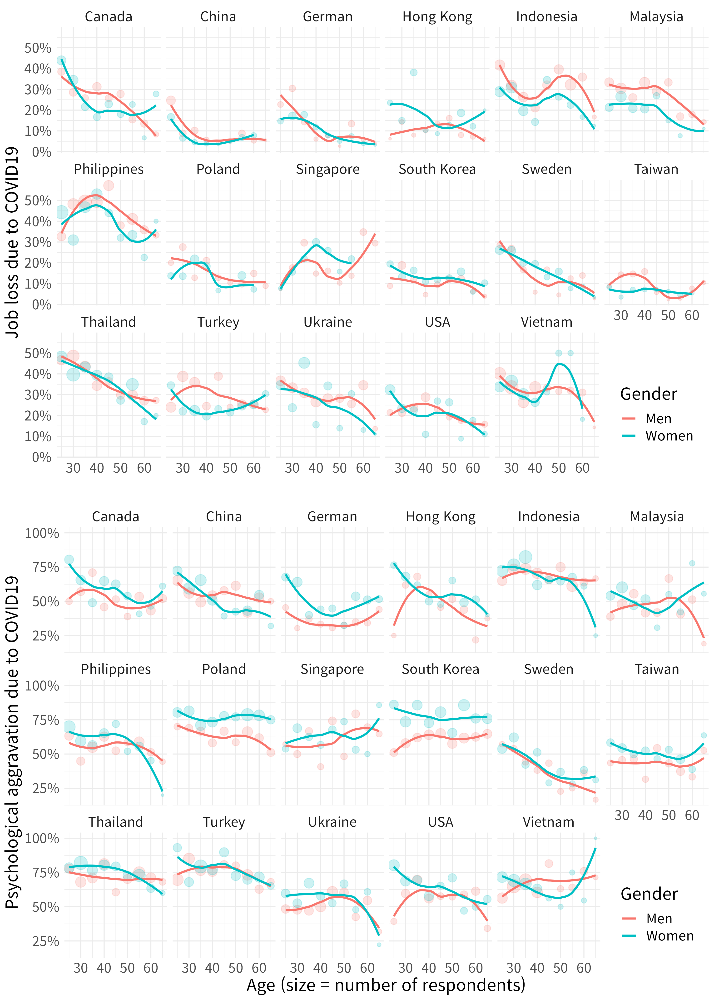
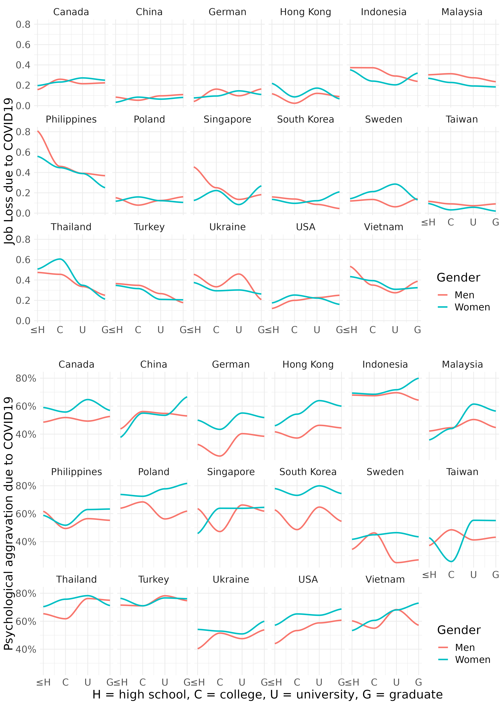
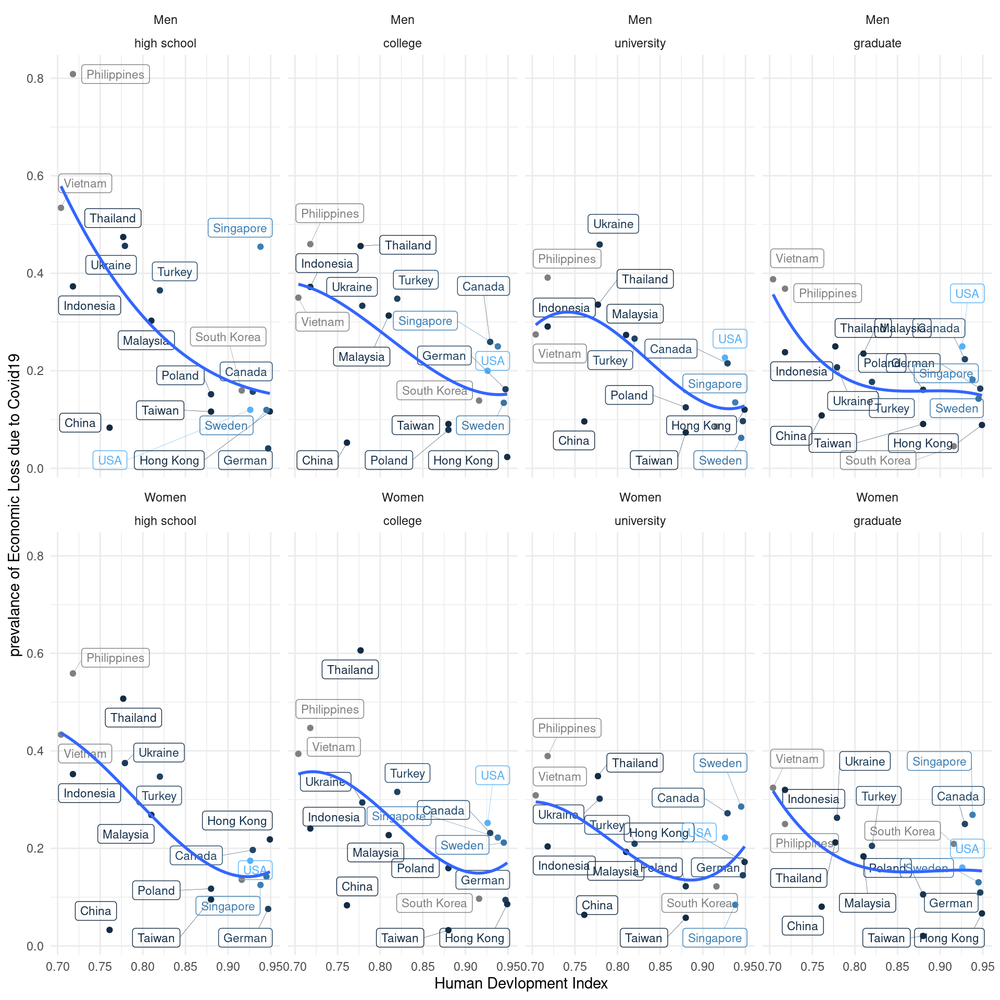

if(!require("tidyverse")) install.packages("tidyverse")
if(!require("ggthemes")) install.packages("ggthemes")
if(!require("ggrepel")) install.packages("ggrepel")
if(!require("gridExtra")) install.packages("gridExtra")12 다차원 라벨자료
12.1 introduction
In current data, We will used covid19 data from 16 countries. The group is country level and the interesting relationship is regarded on individual economic activity and psychological symptoms. In this chapter, we will discuss about how can visualization multi-level data (The original data are own to Laura, PH.D.)
url1 <- "https://raw.githubusercontent.com/jinhaslab/opendata/main/kwcs/CovidJobLoss.rds"
download.file(url1, "data/CovidJobLoss.rds")
url2 <- "https://raw.githubusercontent.com/jinhaslab/opendata/main/kwcs/hdi.csv"
download.file(url2, "data/hdi.csv")
url3 <- "https://raw.githubusercontent.com/jinhaslab/opendata/main/kwcs/covid_agu1.csv"
download.file(url3, "data/covid_agu1.csv")mm3 = readRDS("data/CovidJobLoss.rds")
hdi = read_csv("data/hdi.csv")%>%
setNames(c('rank', 'country', 'y2019', 'country_1'))
agu1 <- read_csv('data/covid_agu1.csv')Data manipulation for creating and reshaping variables. We will exam the assoicaton between human development index and covid related outcomes.
mm4 <- mm3 %>%
mutate(agegp3 = ifelse(age <=40, '≤40', '>40')) %>%
mutate(agegp3 = factor(agegp3, levels=c('≤40', '>40'))) %>%
filter(Education %in% c(1:6)) %>%
mutate(edugp = ifelse(Education %in% c(1, 2), 1, # high school or less
ifelse(Education %in% c(3),2, # college
ifelse(Education %in% c(4), 3, 4)))) %>% # university (5, 6) Graduate school
mutate(edugp2 = ifelse(Education %in% c(1, 2, 3), 1, 2)) %>%
mutate(EcLossAllgp = ifelse(EcLossAll ==0, 0, 1)) #%>%
mm4.0 = mm4 %>% # hid: human development index for each countries
left_join(hdi %>% filter(!is.na(country_1)) %>%
rename(country_source = country,
country=country_1 ), by = c('country')) %>%
mutate(y2019 = ifelse(country_c =='South Korea', 0.916, y2019))12.1.1 Data analysis start
12.1.1.1 job loss due to COVID19, psychological aggravation according to Gender
Explore data using basic static for job loss prevalence across country and genders. the pyschological aggravation due to covid-19 are also plotted according to same logic.
fig1 <- mm4 %>%
group_by(country_c, gender) %>%
count(EcLossAllgp) %>%
mutate(prob = n/sum(n)) %>%
filter(EcLossAllgp == 1 ) %>%
ggplot(aes(x = gender, y = prob, fill = gender)) +
geom_bar(stat = "identity")+
xlab("")+
ylab("Job loss due to COVID19")+
scale_y_continuous(labels = function(x) paste0(x*100, "%"))+
facet_wrap(country_c ~., nrow = 3) +
theme_minimal()+
theme(text = element_text(size=17))+
theme(legend.position = c(.92, .1))
fig2 <- mm4 %>%
group_by(country_c, gender) %>%
count(TotalDepAnx) %>%
mutate(prob = n/sum(n)) %>%
filter(TotalDepAnx == 1 ) %>%
ggplot(aes(x = gender, y = prob, fill = gender)) +
geom_bar(stat = "identity")+
ylab("Psychological aggravation due to COVID19")+
xlab('Gender')+
scale_y_continuous(labels = function(x) paste0(x*100, "%"))+
facet_wrap(country_c ~., nrow = 3) +
theme_minimal()+
theme(text = element_text(size=17))+
theme(legend.position = c(.92, .1))Save total figure of fig1 and fig2. arrageGrob make two figures into the one figure.
ggsave(arrangeGrob(fig1, fig2, ncol = 1), file ='results/covid/figtotal.png', dpi = 300, width = 10, height =14)
ggsave(arrangeGrob(fig1, fig2, ncol = 1), file ='results/covid/tiff/figtotal.tiff', dpi = 300, width = 10, height =14)
12.1.1.2 job loss, psychological aggravation according to age group
fig3 <- mm4.0 %>%
#filter(!country %in% c(16, 173)) %>%
group_by(country_c, gender, agegp2) %>%
count(EcLossAllgp) %>%
mutate(prob = n/sum(n)) %>%
filter(EcLossAllgp == 1) %>%
ggplot(aes(x = agegp2, y = prob, color = gender)) +
geom_point(aes(size = n), alpha = 0.2, show.legend = FALSE) +
geom_smooth(method = 'loess', span =0.9, se=FALSE) +
ylab("Job loss due to COVID19")+
scale_y_continuous(labels = function(x) paste0(x*100, "%"))+
theme_minimal() +
xlab("")+
labs(color = "Gender") +
facet_wrap(country_c~., nrow =3)+
theme(legend.position = c(.92, .1))+
theme(text = element_text(size=17))+
scale_x_continuous(breaks = c(2,4,6,8), labels = c(30,40,50,60))
fig4 <- mm4.0 %>%
#filter(!country %in% c(16, 173)) %>%
group_by(country_c, gender, agegp2) %>%
count(TotalDepAnx) %>%
mutate(prob = n/sum(n)) %>%
filter(TotalDepAnx == 1) %>%
ggplot(aes(x = agegp2, y = prob, color = gender)) +
geom_point(aes(size = n), alpha = 0.2, show.legend = FALSE) +
geom_smooth(method = 'loess', span =0.9, se=FALSE) +
ylab("Psychological aggravation due to COVID19")+
scale_y_continuous(labels = function(x) paste0(x*100, "%"))+
theme_minimal() +
xlab("Age (size = number of respondents)") +
labs(color = "Gender") +
facet_wrap(country_c~., nrow =3)+
theme(legend.position = c(.92, .1))+
theme(text = element_text(size=17))+
scale_x_continuous(breaks = c (2,4,6,8), labels = c(30,40,50,60))save figures
#figtotal2 <- grid.arrange(fig3, fig4, ncol = 1)
ggsave(arrangeGrob(fig3, fig4, ncol = 1), file ='results/covid/figtotal2.png', dpi = 300, width = 10, height =14)
ggsave(arrangeGrob(fig3, fig4, ncol = 1), file ='results/covid/tiff/figtotal2.tiff', dpi = 300, width = 10, height =14)
12.1.2 job loss, psychological aggravation according to Education level
Quzi 1
Let’s fill the { num } to draw following figure.
fig5 <- mm4.0 %>%
group_by(edugp, country_c, gender) %>%
count(EcLossAllgp ) %>%
mutate(prob = n/sum(n)) %>%
filter(EcLossAllgp == 1) %>%
ggplot(aes(x = {1} , y ={2} , color = {2})) +
geom_smooth(method = {3}, span =0.9, se = FALSE) +
scale_x_continuous(labels=c("1" = "≤H", "2" = "C",
"3" = "U", "4" = "G")) +
theme_minimal() +
labs(color = {4}) +
ylab("Job Loss due to COVID19") +
xlab("")+
facet_wrap({5})+
theme(text = element_text(size=17))+
theme(legend.position = c(.92, .1))
# mm4 %>%
# count(TotalDepAnx)
fig6 <- mm4.0 %>%
group_by(edugp, country_c, gender) %>%
count(TotalDepAnx ) %>%
mutate(prob = n/sum(n)) %>%
filter(TotalDepAnx == 1 ) %>%
ggplot(aes({6})) +
geom_smooth({7}) +
scale_x_continuous({8}) +
theme_minimal() +
ylab("Psychological aggravation due to COVID19") +
scale_y_continuous(labels = {9})+
xlab("H = high school, C = college, U = university, G = graduate ") +
labs(color = "Gender") +
facet_wrap({10})+
theme(text = element_text(size=17))+
theme(legend.position = c(.92, .1))save figure
#figtotal3 <- grid.arrange(fig5, fig6, ncol = 1)
ggsave(arrangeGrob(fig5, fig6, ncol = 1), file ='results/covid/figtotal3.png', dpi = 300, width = 10, height =14)
ggsave(arrangeGrob(fig5, fig6, ncol = 1), file ='results/covid/tiff/figtotal3.tiff', dpi = 300, width = 10, height =14)knitr::include_graphics('results/covid/figtotal3.png')
12.1.3 Visulization with human develop index stratification
Labelled data visualization need the code of `geom_label_repel’
agu1 <- read_csv('data/covid_agu1.csv')
lab_mm <- mm4.0 %>%
left_join(agu1, by = 'country_c') %>%
mutate(inc_aug = c_case_agu1 / population *100000,
dth_aug = c_death_agu1/ population *100000) %>%
group_by(country_c, gender) %>%
summarize(hdi = mean(y2019),
Psycho = mean(TotalDepAnx ==1),
ecl = mean(EcLossAll !=0),
inc = mean(inc_aug))
lab_mm%>%
ggplot(aes(x = hdi, y = ecl, color = inc)) +
geom_point() +
theme_classic()+
xlab("Human Devlopment Index") +
#ylab("prevalance of Psychological Symptoms") +
ylab("prevalance of Economic Loss due to COVID19") +
#ylim(c(-0.1, 1)) + #xlim(c(2, 4)) +
geom_label_repel(aes(label = country_c),
fill = NA, # 투명하게 해서 겹쳐도 보이게
alpha =1, size = 3, # 작게
box.padding = 0.4, # 분별해서
segment.size =0.1, # 선
force = 2) + # 이것은 무엇일까요?
theme_minimal() +
geom_smooth(method = 'lm', formula = y ~ poly(x,2), se=FALSE) +
#geom_smooth( se=FALSE) +
facet_wrap(gender~.) +
guides(color = "none")
Quiz 2,
The Education level may affect the relationship between hdi and economic loss status. please draw following plot, and find the most vulnerable population.
